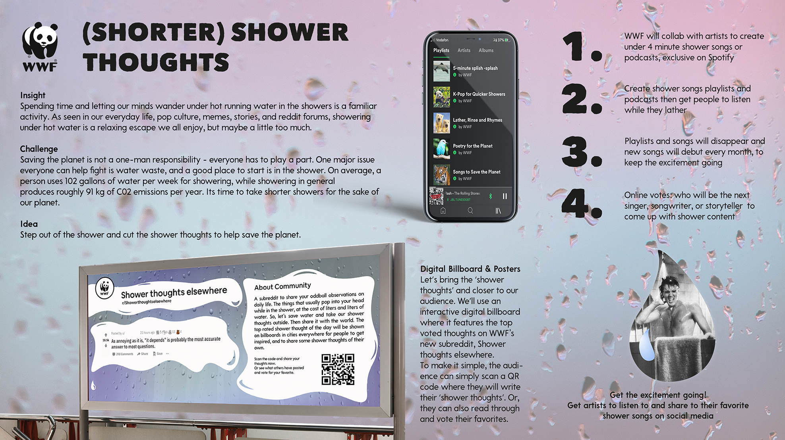
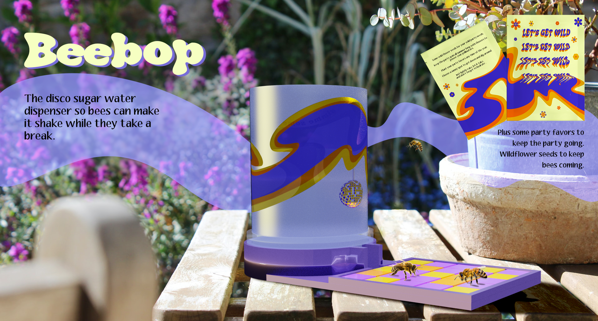
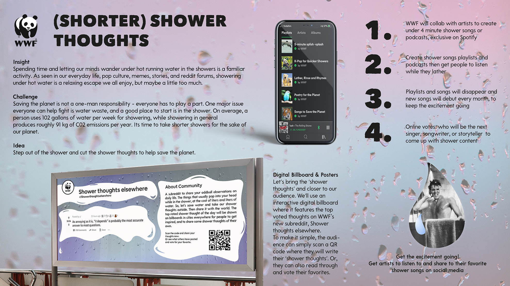
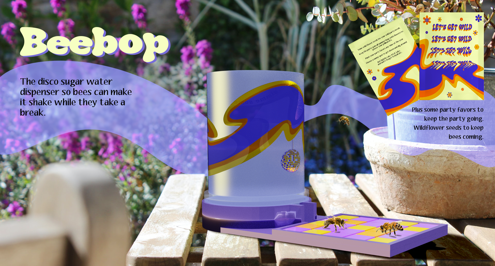

art direction
 



x
art direction: Camille Nizet, Tanvi Phalak, Khatia Nodia + copy: Gayathry Ragavan, Elfreda Tetteh
art direction + copy by Camille
art direction by Camille + copy by Beata Primana
art direction + copy by Camille
art direction + copy by Camille
I love bees. I grew up with them always buzzing around since my mom was a beekeeper, so here I am trying to share my love with the world. Everyone knows we need them, but I also want to show just how cool they really are.
Reimagine your favorite movie. So I did. Finally, I found a purpose for my useless skill of memorizing movie lines. A modern twist on Monty Python and The Holy Grail. In my opinion, a movie that should be watched at least twice. A year.
How do we get gen z to make a change towards a more sustainable lifestyle? By focusing a smaller part of climate change, water consumption, we created an integrated campaign to target gen z and convince them to take shorter showers.
description
video